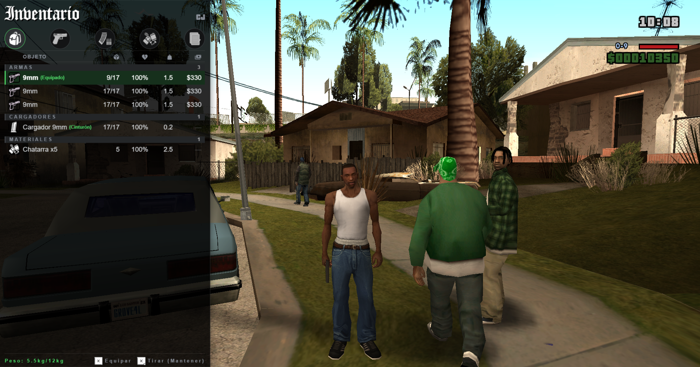

Hobby
SAWebUI — Web UI Runtime for GTA San Andreas
Pionero en integrar una interfaz con tecnología web en GTA SA Singleplayer. Web UI runtime que renderiza HTML/CSS/JS dentro del juego usando CEF (Chromium Embedded Framework) en modo OSR. Expone una API pública para que cualquier mod pueda crear interfaces sin conocer CEF, D3D9 o Win32.
C++
JavaScript
HTML/CSS
CEF
CLEO Redux
- CEF OSR (Off-Screen Rendering) para renderizado en juego
- API pública con 9 C exports y 7 CLEO commands
- JS facade para mods CLEO Redux
- Input y hit-testing integrados
- Bridge RenderWare / D3D9 para integración con GTA SA
- JS ↔ native messaging bidireccional
- Multi-UI support para múltiples interfaces simultáneas
- Cursor y keyboard focus management